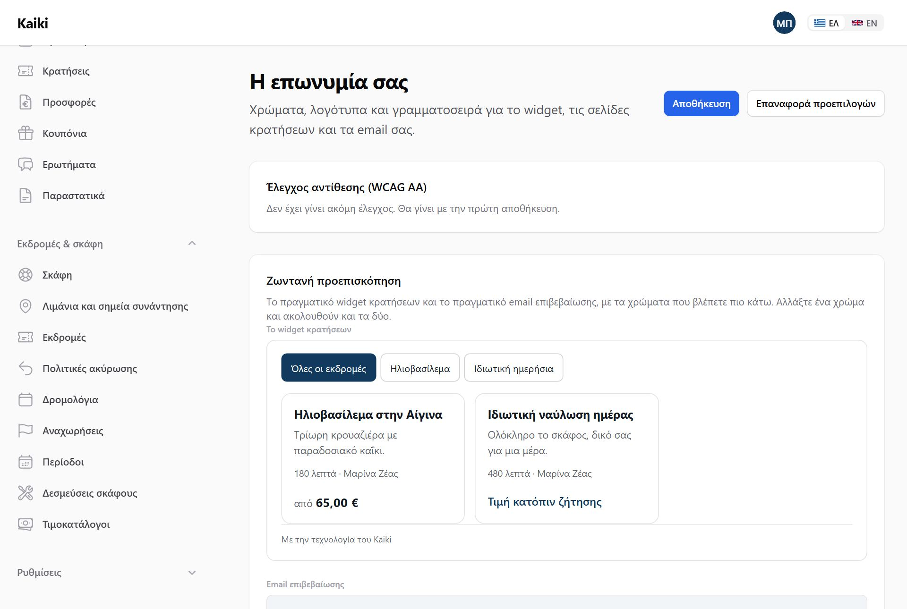
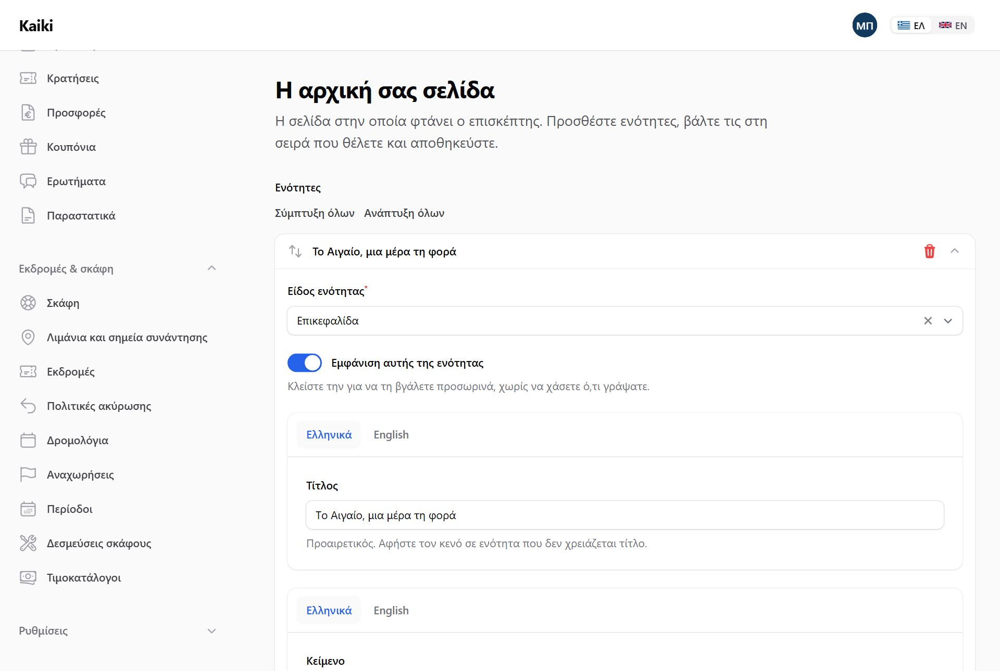
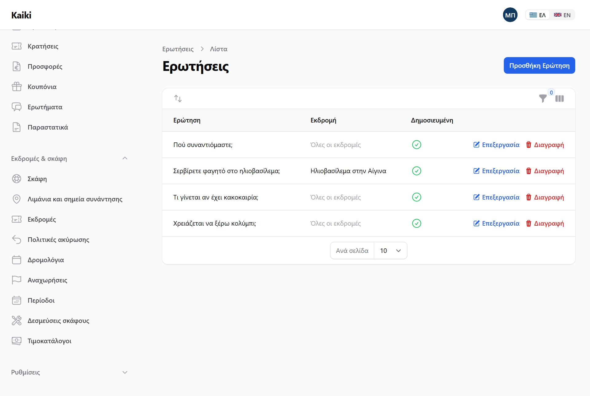
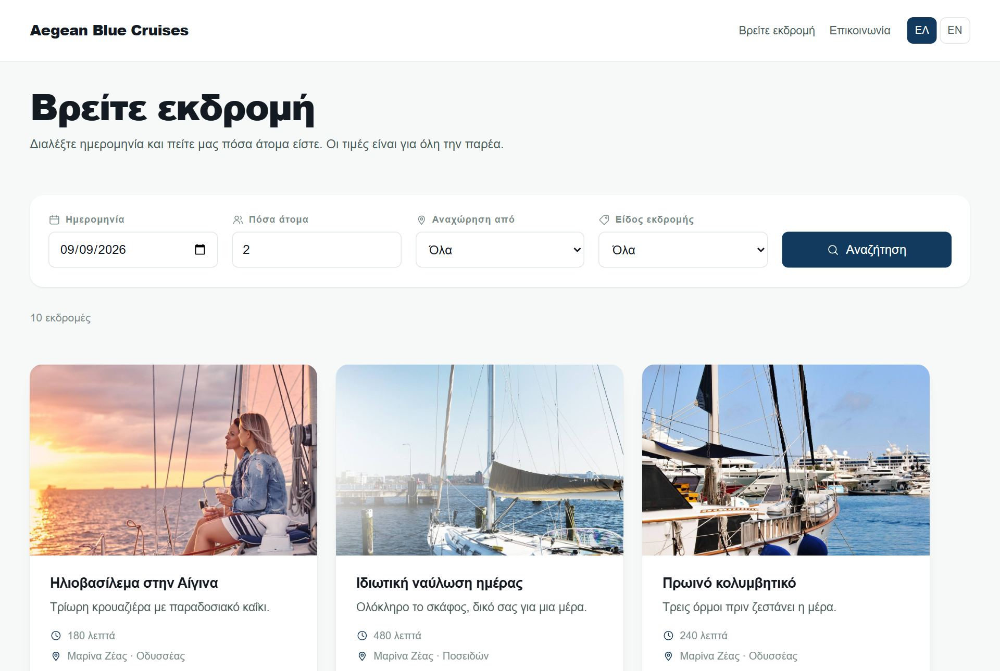
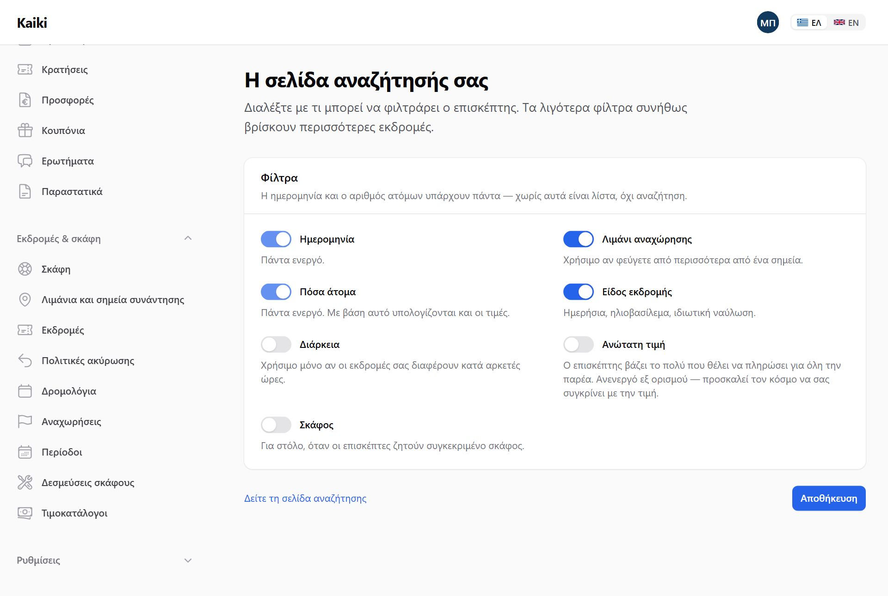
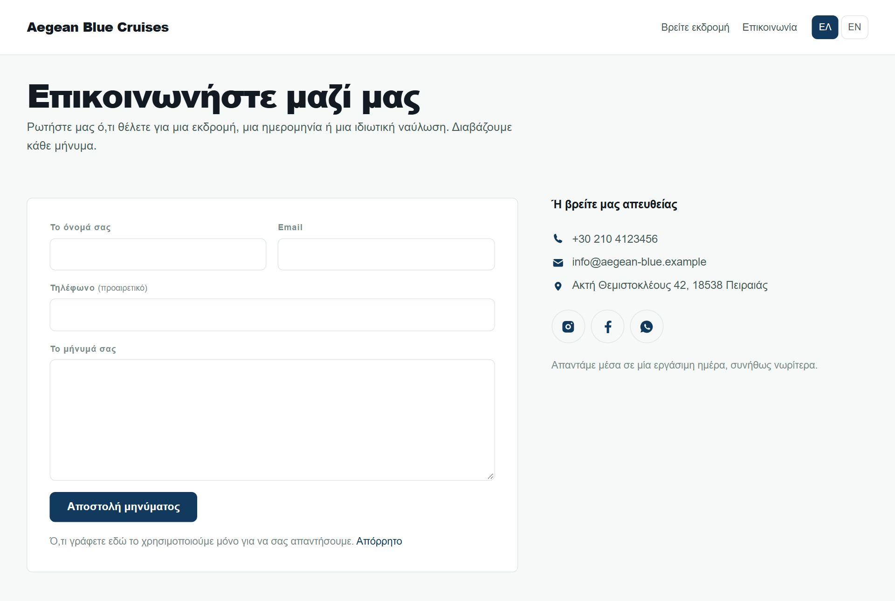
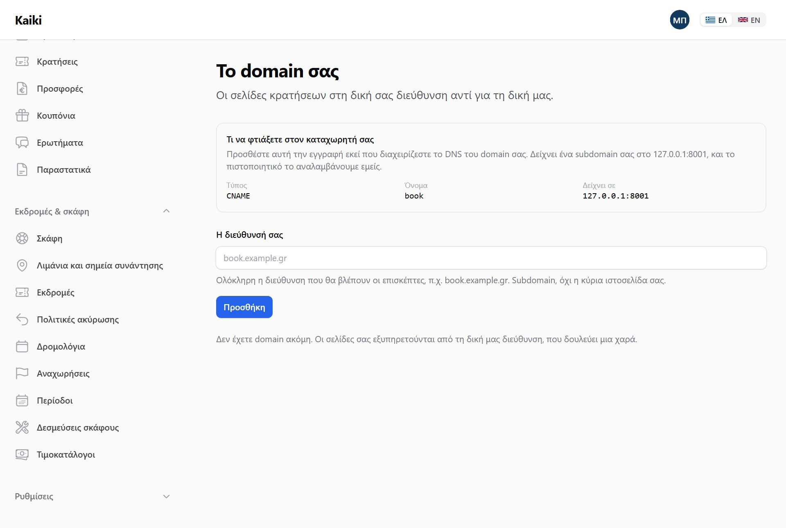

Το Kaiki φτιάχνει και συντηρεί μια δημόσια σελίδα για εσάς. Αν έχετε ήδη δική σας, μπορείτε να βάλετε μόνο τη φόρμα κράτησης μέσα της.

Ό,τι ορίζετε εδώ ισχύει και στη σελίδα σας και στη φόρμα κράτησης, όπου κι αν βρίσκεται αυτή — και στα email που φεύγουν στους πελάτες σας.
Υπάρχει πεδίο για δικό σας CSS. Καθαρίζεται πριν εφαρμοστεί και ισχύει μόνο στη σελίδα σας — ποτέ μέσα στη φόρμα κράτησης, γιατί εκείνη τρέχει και σε ξένα site και δεν πρέπει να μπορεί να σπάσει από αλλού.

Ο τίτλος και το κείμενο του hero, οι προβεβλημένες εκδρομές, το «ποιοι είμαστε» με φωτογραφία, οι κριτικές, ο καιρός, τα στοιχεία επικοινωνίας. Κάθε ενότητα μπορεί να κλείσει τελείως.
Αν την ανοίξετε, η σελίδα δείχνει πρόγνωση για το λιμάνι αναχώρησης. Από κάτω αναφέρεται από πού προέρχεται — γιατί μια πρόγνωση χωρίς πηγή είναι μια πρόγνωση που δεν ξέρει κανείς πόσο να εμπιστευτεί.




Δεν ρυθμίζεται και δεν συντηρείται: το τηλέφωνο, το email, η διεύθυνση και τα social διαβάζονται από τα στοιχεία της επιχείρησής σας — τα ίδια που δείχνει το υποσέλιδο και η αρχική. Αλλάζετε το τηλέφωνο μία φορά και αλλάζει παντού.
Ο σύνδεσμος υπάρχει στο μενού, στο υποσέλιδο, στο banner της αρχικής και μέσα σε κάθε εκδρομή, στο πλαίσιο «Έχετε απορίες;». Από εκεί το μήνυμα φτάνει με την εκδρομή δίπλα του, ώστε να μη διαβάζετε «είναι διαθέσιμη;» χωρίς να ξέρετε ποια.
Στα «Αιτήματα», όχι στο email σας. Εκεί έχει κατάσταση — καινούριο, απαντήθηκε, έκλεισε — και κάποιον που το κλείνει. Ένα μήνυμα σε inbox είναι ένα μήνυμα που κανείς δεν μπορεί να πει αν απαντήθηκε.

Μέχρι να επαληθευτεί, η σελίδα σας εξακολουθεί να δουλεύει στη διεύθυνση που έχει ήδη. Το πιστοποιητικό ασφαλείας εκδίδεται αυτόματα.
Αν έχετε ήδη site — σε WordPress ή οπουδήποτε — δεν χρειάζεται να το αλλάξετε. Βάζετε τη φόρμα κράτησης μέσα του.
Το δημόσιο κλειδί φαίνεται στον κώδικα κάθε επισκέπτη και μόνο διαβάζει διαθεσιμότητα και τιμές. Το μυστικό κλειδί δεν μπαίνει ποτέ σε σελίδα — είναι για σύστημα που μιλά σε σύστημα, και εμφανίζεται μία μόνο φορά όταν το δημιουργείτε.